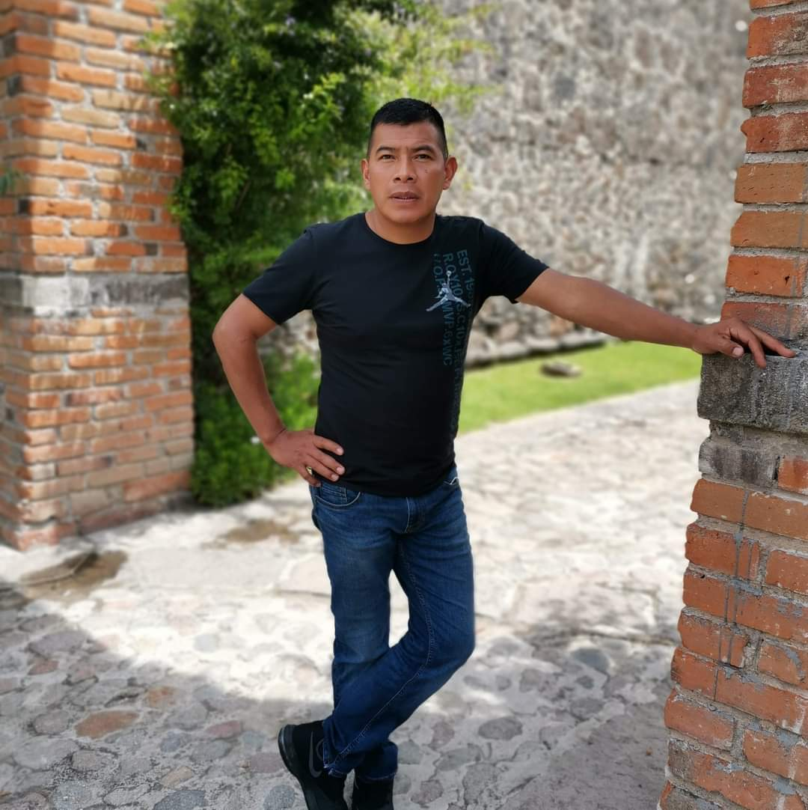

Margarita Perez Espegel
Mama

Explora mi árbol genealógico: descubre nuestras raíces, historia y conexiones familiares.
Como diseñador gráfico y fotógrafo de 23 años, mi enfoque se centra en la creatividad y la expresión visual. Actualmente estoy comprometido con mi formación en diseño gráfico, buscando constantemente mejorar mis habilidades en esta área. Aunque nací en Tlaxcala, ahora llamo a Puebla mi hogar, donde encuentro inspiración en su entorno cultural diverso. Mi trabajo consiste en capturar la belleza del mundo que me rodea y transformarla en piezas visuales que comuniquen de manera sutil pero impactante. Cada proyecto es una oportunidad para explorar nuevas ideas y crecer como profesional en este apasionante campo creativo.
Mi hermana mayor es una abogada de 25 años que ha encontrado su camino en el poder judicial del estado de Puebla. Aunque nació en Tlaxcala, ahora ha hecho de Puebla su hogar. Su dedicación al mundo legal es evidente en su compromiso y pasión por su trabajo. Fuera de la sala del tribunal, disfruta de la serenidad y el ejercicio que le proporciona nadar. Además, tiene un gusto por el maquillaje, encontrando en él una forma de expresión creativa y personal. Su capacidad para equilibrar sus responsabilidades profesionales con sus pasatiempos la convierte en una figura inspiradora y admirable en nuestra familia.